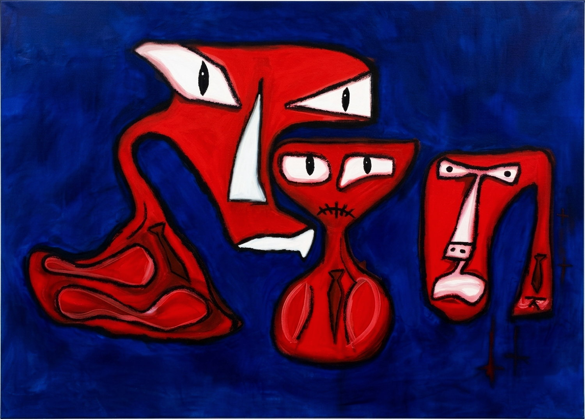

016 — Oil on canvas, 2026
A personal piece about my relationship with my parents and the shape our family took. The large angry figure on the left is my mother, looming and controlling, her agenda pressed onto everything around her. In the middle is me, mouth shut and made small, muted and unhappy and trapped in the space between them. My father sits on the right, small because his role was small, present but rarely saying much or letting his own opinions or personality show. Each of them wears a tie, the quiet mark of a working class family and the strain of getting by.
Oil on canvas.
- Dimensions
- 210 × 150 cm
- Medium
- Oil on canvas
- Year
- 2026
- Availability
- Contact me